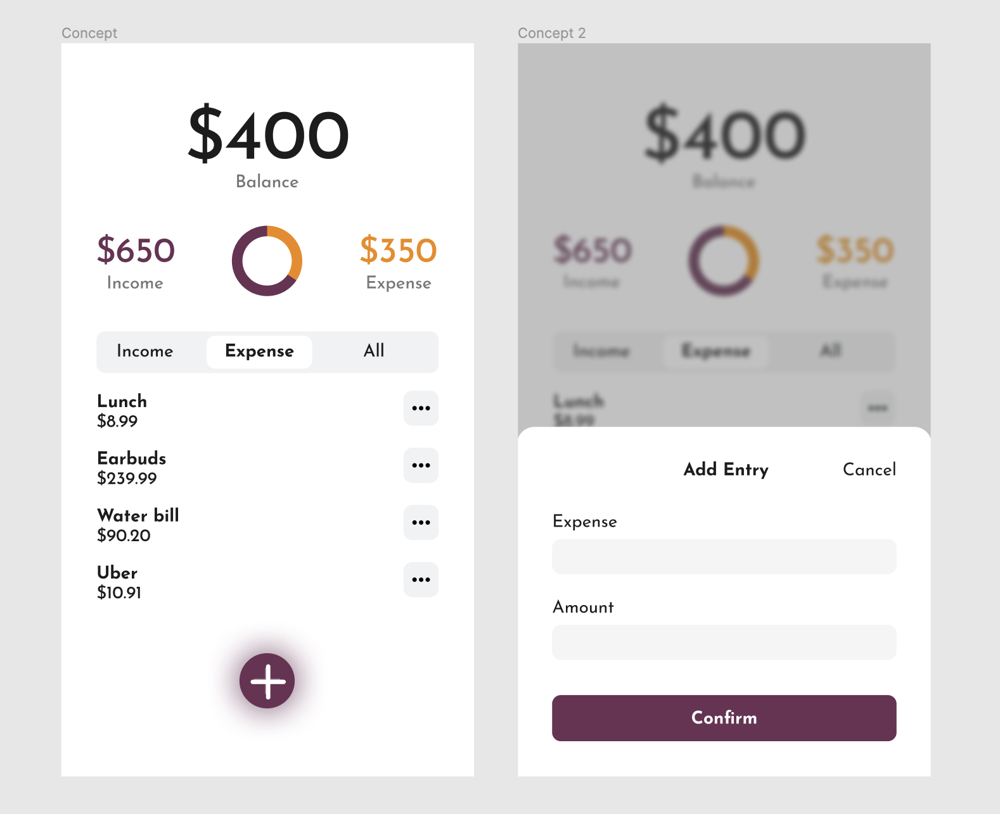

The objective for this case was to build a single-purpose web application. I built a budget tracker where you can input incomes and expenses. The process of creating the project was relatively straightforward, using HTML, CSS, and Javascript to code the functions and interactions.
We were tasked with creating a single-purpose web application. This app needed to utilize specialized HTML and CSS metatags that allowed it to function as a web application. The app’s functionality needed to be simple and work offline. We had 10 weeks to conceptualize, design, and develop the project. This was a solo project.
I decided to build a simple expense-tracking app. The app would allow you to input incomes and expenses and the interface would dynamically update to tell you your overall balance. I thought this would be simple enough to develop in the 10 weeks, but would still be useful.
User research was not required for this project, as this course was mainly focused on the development side. This meant that my first step was creating the design. I took about a week to research similar projects and conceptualize a simple interface that would fit the needs of my project.
I then moved on to coding the foundational HTML and CSS elements based on the wireframes that were completed. The following weeks were spent developing the Javascript to make the app function correctly. This was the most time-consuming step as I don’t have as much experience working with the language. I spent a lot of time looking up different tutorials to fit the needs of my project.
The final version of the project has full intended functionality for the project. This includes adding/editing/deleting incomes and expenses, having a chart displaying the incomes/expenses, and the individual figures for each of these categories as well. There are three simple buttons within the interface - “add income/expense”, “edit”, or “delete.”
View the final build
I think the project was a success. I set out to make a simple budgeting application and I was able to execute that vision. The project helped me learn about the mobile specific metatags and more advanced Javascript programming. There were a few places where I had to compromise certain aesthetic features, but all of the functionality that I wanted to implement was able to be developed.